용접산업기사 (2020-08-22 기출문제)
1과목: 용접야금 및 용접설비제도
1. 다음 중 용접 전에 적당한 온도로 예열하는 목적과 가장 거리가 먼 것은?
- 수축 변형을 감소시키기 위하여
- 냉각속도를 빠르게 하기 위하여
- 잔류응력을 경감시키기 위하여
- 연성을 증가시키기 위하여
(정답률: 85%)

2. 금속의 일반적인 성질로 틀린 것은?
- 수은 이외에는 상온에서 고체이다.
- 전기에 부도체이며, 비중이 작다.
- 고체 상태에서 결정구조를 갖는다.
- 금속 고유의 광택을 갖고 있다.
(정답률: 84%)
3. 순철의 성질이 아닌 것은?
- 담금질 효과를 받지 않는다.
- 용접성이 좋다.
- 연성이 크다.
- 취성이 크다.
(정답률: 54%)
4. 강의 제조법 중 탈산정도에 따른 강괴의 종류에 해당하지 않는 강은?
- 킬 드강
- 림 드강
- 쾌삭강
- 세미킬드강
(정답률: 77%)
5. 저탄소강의 용접 열영향부 조직 중 가열온도 범위가 900 ~ 1100℃이고, 재결정으로 미세화 되어 인성 등의 기계적 성질이 양호한 것은?
- 조립부
- 세립부
- 모재부
- 취화부
(정답률: 60%)
6. 체심입방격자의 단위격자에 속하는 원자수는?
- 1개
- 2개
- 3개
- 4개
(정답률: 67%)
7. 강의 연화 및 내부응력 제거를 목적으로 하는 열처리는?
- marquenching
- annealing
- carburizing
- nitriding
(정답률: 70%)
8. 아크용접 피복제의 종류 중에서 슬래그 생성제로만 짝지어진 것은?
- 산화철, 규사, 장석, 석회석, 일미나이트
- 석회석, 일미나이트, 망간철, 장석, 몰리브덴
- 산화철, 석회석, 톱밥, 형석, 일미나이트
- 석회석, 산화니켈, 장석, 규산나트륨, 일미나이트
(정답률: 52%)
9. 용접 슬래그 중 중성 산화물은 어느 것인가?
- SiO2
- Aℓ2O3
- MnO
- Na2O
(정답률: 52%)
10. 강의 조직 중에서 경도가 높은 것에서 낮은 순으로 나열된 것은?
- 트루스타이트 ＞ 솔바이트 ＞ 오스테나이트 ＞ 마텐자이트
- 솔바이트 ＞ 트루스타이트 ＞ 요스테나이트 ＞ 마텐자이트
- 마텐자이트 ＞ 오스테나이트 ＞ 솔바이트 ＞ 트루스타이트
- 마텐자이트 ＞ 트루스타이트 ＞ 솔바이트 ＞ 오스테나이트
(정답률: 62%)
11. 특정 부분의 도형이 작아서 그부분의 상세한 도시나 치수 기입을 할 수 없을 때 그 부분을 가는 실선으로 에워싸고, 영문자 대문자로 표시함과 동시에 그 해당 부분을 다른 장세로 확대하여 그리는 것은?
- 부분 투상도
- 부분 확대도
- 국부 투상도
- 보조 투상도
(정답률: 76%)
12. 도형의 표시방법 중 도형의 생략 도시에 관한 내용으로 가장 적절하지 않은 것은?
- 도형이 대칭일 경우에는 대칭 중심선의 한쪽 도형만 그리고, 그 대칭 중심선의 양끝 부분에 짧은 2개의 나란한 가는선을 그린다.
- 도면에서 같은 크기나 모양이 계속 반복될 경우에는 생략하여 도시할 수 있다.
- 긴 테이퍼 부분 또는 기울기 부분을 잘라낸 도시에서는 경사가 완만한 것은 실제의 각도로 도시하지 않아도 된다.
- 긴 테이퍼의 중간 부분을 생략하여 도시하였을 경우 잘라낸 끝부분은 아주 굵은 선으로 나타낸다.
(정답률: 47%)
13. 다음 중 치수 기입의 원칙으로 틀린 것은?
- 치수는 중복기입을 피한다.
- 치수는 되도록 주 투상도에 집중시킨다.
- 치수는 계산하여 구할 필요가 없도록 기입한다.
- 관련되는 치수는 되도록 분산시켜서 기입한다.
(정답률: 75%)
14. 다음과 같은 용접 기본기호의 명칭으로 맞는 것은?
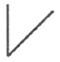
- 일면 개선형 맞대기 용접
- 개선 각이 급격한 V형 맞대기 용접
- 넓은 루트면 있는 V형 맞대기 용접
- 넓은 루트면 있는 한 면 개선형 맞대기 용접
(정답률: 65%)
15. 다음 선의 종류 중 단면의 무게 중심을 연결한 선을 표시하거나, 렌즈를 통과하는 광축을 나타내는데 사용하는 것은?
- 굵은 파선
- 가는 일점 쇄선
- 가는 이점 쇄선
- 굵은 일점 쇄선
(정답률: 46%)
16. 다음 그림의 용접기호는 어떤 용접을 나타내는가?
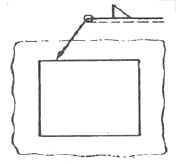
- 일주 필릿 용접
- 연속 필릿 현장 용접
- 단속 필릿 현장 용접
- 일주 맞대기 현장 용접
(정답률: 64%)
17. 다음 중 각기둥이나 원기둥을 전개할 때 사용하는 전개도법으로 가장 적합한 것은?
- 사진 전개도법
- 평행선 전개도법
- 삼각형 전개도법
- 방사선 전개도법
(정답률: 66%)
18. 그림과 같은 용접기호가 심(seam)용접부에 도시되어 있다. 다음 중 설명이 틀린 것은?
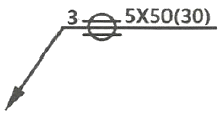
- 심 용접부의 폭은 3mm이다.
- 심 용접부의 두께는 5mm이다.
- 심 용접부의 길이는 50mm이다.
- 심 용접부의 용접 거리는 30mm이다.
(정답률: 60%)
19. 다음 관 이음쇠의 기호 플랜지 이음의 캡 기호로 가장 적합한 것은?
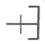
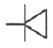
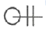
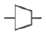
(정답률: 66%)
20. 한 도면에서 두 종류 이상의 선이 같은 장소에 겹치게 될 때 우선순위로 옳은 것은?
- 숨은선 → 절단선 → 외형선 → 중심선
- 숨은선 → 절단선 → 중심선 → 외형선
- 외형선 → 숨은선 → 절단선 → 중심선
- 외형선 → 중심선 → 절단선 → 숨은선
(정답률: 62%)
2과목: 용접구조설계
21. 다음 흠 이음 형상 중 플레어 용접부의 형상과 가장 거리가 먼 것은?
- I형
- V형
- X형
- K형
(정답률: 54%)
22. 중판 이상 두꺼운 판의 용접을 위한 홈 설계시 고려사항으로 틀린 것은?
- 루트 반지름은 가능한 작게 한다.
- 홈의 단면적은 가능한 작게 한다.
- 적당한 루트 간격과 루트 면을 만들어 준다.
- 최소 10°정도 전후 좌우로 용접봉을 움직일 수 있는 홈 각도를 만든다.
(정답률: 51%)
23. 모재의 인장강도가 400MPa이고, 용접시험편의 인장강도가 280MPa이라면 용접부의 이음효율은 몇 %인가?
- 50
- 60
- 70
- 801
(정답률: 64%)
24. 다음 중 용접 구조물을 피로강도를 향상시키기 위한 방법으로 틀린 것은?
- 구조상 응력 집중이 되는 곳에 용접을 집중 시킬 것
- 열처리 방법을 이용하여 용접부의 잔류응력을 완화 시킬 것
- 냉간 가공이나 야금적 젼화 등을 이용하여 기계적인 강도를 높일 것
- 표면가공이나 다듬질을 이용하여 단면이 급변하는 부분을 피할 것
(정답률: 66%)
25. 용접부 검사에서 비파괴 시험법에 속하는 것은?
- 충격 시험
- 피로 시험
- 경도 시험
- 형광침투 시험
(정답률: 75%)
26. 용접 접합면에 홈(groove)을만드는 주된 이유는?
- 변형을 줄이기 위하여
- 완전한 용입을 위하여
- 재료를 절약하기 위하여
- 제품의 치수를 조절하기 위하여
(정답률: 73%)
27. 용접이음 설계시 충격하중을 받는 연강의 안전율로 적당한 것은?
- 3
- 5
- 8
- 12
(정답률: 48%)
28. 일반적으로 용접순서를 결정할 때 주의해야 할 사항으로 옳은 것은?(오류 신고가 접수된 문제입니다. 반드시 정답과 해설을 확인하시기 바랍니다.)
- 중심선에 대하여 비대칭으로 용접을 진행한다.
- 리벳과 용접을 병용하는 경우에는 용접 이음을 먼저 한다.
- 동일 평면 내에 이음이 많을 경우, 수축을 오른쪽으로 보낸다.
- 수축이 작은 이음을 먼저 용접하고, 수축이 큰 이음을 나중에 용접한다.
(정답률: 53%)
29. 용접부의 단면을 연삭기나 샌드페이퍼 등으로 연마하고 적당히 부식시켜 육안이나 저배율의 확대경으로 관찰하여 용입의 상태, 다층용접에 있어서의 각층의 양상, 열영향부의 범위, 결함의 유무 등을 알아보는 시험은?
- 파면 시험
- 피로시험
- 전단 시험
- 매크로 조직 시험
(정답률: 63%)
30. 두께 4mm인 연강 판을 I형 맞대기 이음 용접을 한 결과 용착금속의 중량이 3kg이었다. 이때 융착효율이 60%라면 용접봉의 사용중량은 몇 kg인가?
- 4
- 5
- 6
- 7
(정답률: 54%)
31. 용접 설계상 유의항 사항이 아닌 것은?
- 가능한 낮은 전류를 사용한다.
- 가능한 아래보기 용접을 하도록 한다.
- 이음부가 한곳에 집중되지 않도록 한다.
- 적당한 루트간격과 홈 각도를 선택하도록 한다.
(정답률: 74%)
32. 피복 아크 용접에서 아크전류 200A, 아크전압 30V, 용접속도 20㎝/min 일 때 용접 길이 1㎝당 발생하는 용접입열(Jpule/㎝)은?
- 12000
- 15000
- 18000
- 20000
(정답률: 52%)
33. 용접 기본기호에서 “넓은 루트면이 있는 한 면 개선형 맞대기 용접”을 나타내는 것은?
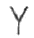
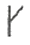
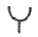
(정답률: 53%)
34. 용접이음에서 취성파괴의 일반적 특징에 대한 설명 중 틀린 것은?
- 온도가 높을수록 발생하기 쉽다.
- 항복점 이하의 평균응력에서도 발생한다.
- 거시적 파면상황은 판 표면에 거의 수직이다.
- 파괴의 기점은 응력과 변형이 집중하는 구조적 및 형성적인 불연속부에서 발생하기 쉽다.
(정답률: 46%)
35. 양면 용접에 의하여 충분한 용입을 얻으려고 할 때 사용되며 두꺼운 판의 용접에 가장 적합한 맞대기 홈의 형태는?
- I형
- H형
- U형
- V형
(정답률: 65%)
36. 판의 굽힘이 생긴 부분을 가열 온도 500~600℃, 가열시간은 약 30초, 가열점의지름은 20~30mm, 중심 거리는 60~800mm로 가열 후 즉시 수냉하는 용접변형 교정방법은?
- 피닝법
- 점 가열법
- 선상 가열법
- 가열 후 해머링법
(정답률: 44%)
37. 용접수축에 의한 굽힘 변형 방지법으로 틀린 것은?
- 개선 각도는 용접에 지장이 없는 범위에서 작게 한다.
- 후퇴법, 대칭법, 비석법 등을 채택하여 용접한다.
- 역변형을 주거나 구속 지그로 구속한 후 용접한다.
- 판 두께가 얇은 경우 첫 패스 측의 개선 깊이를 작게 한다.
(정답률: 55%)
38. 용접 시 발생하는 일차결함으로서, 응고온도범위 또는 그 직하의 비교적 고온에서 용접부의 자기수축과 외부구속 등에 의한 인장트레스와 균열에 민감한 조직이 존재하면 발생하는 용접부의 균열은?
- 공칭 균열
- 저온 균열
- 고온 균열
- 지연 균열
(정답률: 72%)
39. 용접변형의 일반적 특성에서 홈 용접시 용접진행에 따라 홈 간격이 넓어지거나 좁아지는 변형은?
- 종변형
- 횡변형
- 각변형
- 회전변형
(정답률: 48%)
40. 연강 판의 양면 필릿(fillet) 용접시 용접부의 목길이는 판 두께의 얼마 정도로 하는것이 가장좋은 것은?
- 25%
- 50%
- 75%
- 100%
(정답률: 63%)
3과목: 용접일반 및 안전관리
41. 이음부의 루트 간격 치수에 특히 유의하여야 하며, 아크가 보이지 않는 상태에서 용접이 진행된다고 하여 잠호 용접이라고도 하는 것은?
- 피복 아크 용접
- 탄산가스 아크 용접
- 서브머지드 아크 용접
- 불활성가스 금속 아크 용접
(정답률: 76%)
42. 가스절단이 용이하지 않은 주철 및 스테인리스강 등을 철분 또는 용제를 분출시켜 산화열 또는 용제의 화학작용을 이용하여 절단하는 방법은?
- 분말절단
- 수중절단
- 산소창절단
- 탄소아크절단
(정답률: 67%)
43. 아세틸렌 압력조정기의 구비조건으로 옳은 것은?
- 압력조정기는 항상 빙결되어야 한다.
- 압력조정기는 동작이 둔간해야 한다.
- 조정압력과 방출압력과의 차이가 클수록 좋다.
- 조정압력은 용기 내의 가스량이 변해도 항상 일정해야 한다.
(정답률: 73%)
44. 구리나 황동을 가스 용접할 때 주로 서용하는 불꽃의 종류는?
- 탄화 불꽃
- 산화 불꽃
- 질화 불꽃
- 중성 불꽃
(정답률: 58%)
45. 피복 아크 용접에서 피복 배합제의 성분 중 탈산제에 속하는 것은?
- 형석
- 석회석
- 페로실리콘
- 중탄산나트륨
(정답률: 46%)
46. 연강용 피복 아크 용접봉 중 가스 실드계의 대표적인 용접봉으로 피복제 중에 유기물을 20 ~ 30%정도 포함하고 있는 것은?
- E4303
- E4311
- E4313
- E4326
(정답률: 50%)
47. 다음 중 아크 용접시 발생되는 유해한 광선에 해당되는 것은?
- X-선
- 자외선
- 감마선
- 중성자선
(정답률: 74%)
48. 일반적인 초음파 용접의 특징으로 틀린 것은?
- 얇은 판이나 필름(film)의 용접도 가능하다.
- 판의 두께에 따라 용접강도가 현저하게 변화한다.
- 냉간압접에 비하여 주어지는 압력이 작으므로 용접물의 변형이 적다.
- 용접 입열이 적고 용접부가 좁으며 용입이 깊어 이종 금속의 용접이 불가능 하다.
(정답률: 63%)
49. 아크 용접기의 사용률을 구하는 식으로 옳은 것은?
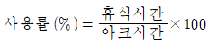
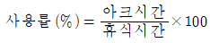
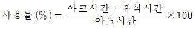
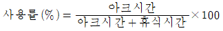
(정답률: 59%)
50. 다음 재료 중 용접시 가스 중독을 일으킬 수 있는 위험이 가장 큰 것은?
- 아연 도금판
- 니켈 도금판
- 망간 도금판
- 알루미늄 도금판
(정답률: 59%)
51. 불활성 가스 금속 아크 용접에 관한 설명으로 틀린 것은?
- 롤러 가압 방식은 2단식과 4단식이 있다.
- 송급 롤러의 형태는 V형, U형, 룰렛형 등이 있다.
- 와이어의 송급방식은 푸시, 폴, 푸시-불, 더블 푸시의 4종류가 있다.
- 공랭식 MIG용접 토치는 비교적 높은 전류로 용접하는 곳에 사용되며 형태로는 잉부착형을 사용한다.
(정답률: 51%)
52. 다음 중 연납에 대한 설명으로 틀린 것은?
- 연납에는 주석-납을 가장 많이 사용한다.
- 염화아연, 염산, 염화암모늄은 연납용 용제로 사용된다.
- 전기적인 접합이나 기밀, 수밀을 필요로 하는 장소에 사용된다.
- 연납의 흡착작용은 주로 아연의 함량에 의존되며 아연 100%의 것이 가장 좋다.
(정답률: 63%)
53. 발전형 직류용접기와 비교할 때, 정류기형 직류용접기의 특성이 아닌 것은?
- 보수와 점검이 어렵다.
- 완전한 직류를 얻지 못한다.
- 정류기의파손에 주위해야 한다.
- 취급이 간단하고 가격이 저렴하다.
(정답률: 46%)
54. AW-400, 정격 사용률이 60%인 아크용접기로 300A의 전류로 용접한다면 허용 사용률은 약 몇 %인가?
- 90
- 100
- 107
- 126
(정답률: 48%)
55. 직류 아크 용접 중 전압분포에서 양극 전압 강하 V1, 음극 전압 강하 V2, 아크 기중 전압 강하 V3로 분류할 때, 아크전압 Va를 구하는 식으로 옳은 것은?
- Va=V1-V2+V3
- Va=V1-V2-V3
- Va=V1+V2+V3
- Va=V1+V2-V3
(정답률: 64%)
56. 용접이나 절단에서 사용하는 가스와 가스용기의 색상이 바르게 짝지어진 것은?
- 수소 - 주황색
- 프로판 - 황색
- 아세틸렌 - 녹색
- 이산화탄소 - 흰색
(정답률: 63%)
57. TIG 용접에서 교류 용접기에 고주파 전류를 사용할 때의 특징으로 틀린 것은?
- 텅스텐 전극봉의 수명이 길어진다.
- 전극봉을 모재에 접촉시키기 않아도 아크가 발생된다.
- 주어진 전극봉 지름에 비하여 전류 사용범위가 크다.
- 용접 작업 중 아크 길이가 약간 길어지면 아크가 끊어진다.
(정답률: 57%)
58. 높은 진공속에서 음극으로부터 방출된 전자를 고압으로 사고시켜 피용접물과의 충동에 의한 에너지로 용접을 행하는 방법은?
- 테르맛 용접법
- 스터드 용접법
- 전자 빔 용접법
- 그래비티 용접법
(정답률: 66%)
59. 스터드 용접에서 페룰(ferrule)의 작용이 아닌 것은?
- 용융금속의 산화를 방지한다.
- 용접 후 모재의 변형을 방지한다.
- 용접이 진행되는 동안 아크열을 집중시켜 준다.
- 용접사의 눈을 아크 광선으로부터 보호해준다.
(정답률: 37%)
60. 일반적인 용접의 특징으로 틀린 것은?
- 작업 공정이 단축되며 경제적이다.
- 재질의 변형이 없으며 이음효율이 낮다.
- 제품의 성능과 수명이 향샹되며 이종 재료도 접합할 수 있다.
- 소음이 적오 실내에서의 작업이 가능하며 복잡한 구조물 제작이 쉽다.
(정답률: 72%)